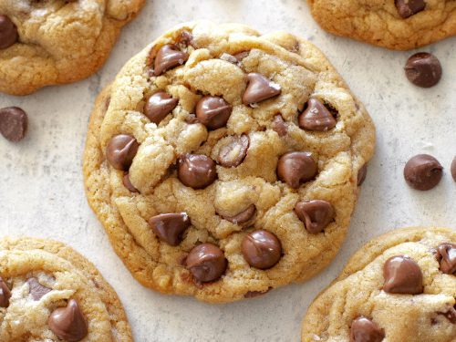

CHOCOCHIP RECIPE

Description
This is the best chocolate chip cookies recipe ever! No funny ingredients, no chilling time, etc. Just a simple, straightforward, amazingly delicious, doughy yet still fully cooked, chocolate chip cookie that turns out perfectly every single time!
These are everything a chocolate chip cookie should be. Crispy and chewy. Doughy yet fully baked. Perfectly buttery and sweet.
Serving: 48
(28.8g per Cookie - number of servings equivalent to one tray bake.)
Cooking time: 30 minutes
You'll Need the following Ingredients:
- 1 cup Butter: This classic chocolate chip cookie recipe starts with two sticks of butter creamed with white and brown sugars. The blend of sugars creates a perfectly balanced flavor.
- 2 Eggs: Eggs add moisture and act as a binding agent, which means they help hold the dough together
- 1 cup Vanilla: Vanilla extract enhances the overall flavor of the chocolate chip cookies
- 1 teaspoon Baking soda: Baking soda acts as a leavener, which means it helps the cookies rise
- 1 cup Water: A bit of hot water creates steam as it bakes, working with the baking soda to puff the cookies up
- 1 teaspoon Salt: A pinch of salt enhances the flavors of the other ingredients, but it won't make the cookies taste salty
- 1 cup Flour: All-purpose flour helps create gluten, which adds structure to the cookie dough
- 1 cup Chocolate chips: Of course, you'll need semisweet chocolate chips! You can use dark or milk chocolate chips if you prefer
- 1 cup Nuts (optional): Walnuts are optional, but they add nutty flavor and a welcome crunch
How to Make Homemade Chocolate Chip Cookies Step-By-Step
- Beat the butter and sugars, then beat in the eggs and vanilla
- Dissolve the baking soda in hot water and add to the mixture
- Stir in the flour, chocolate chips, and walnuts
- Drop dough onto a prepared baking sheet
- Leave the melted mixture to cool to room temperature
- Bake until the edges are golden brown 20 m
Recipes Homepage